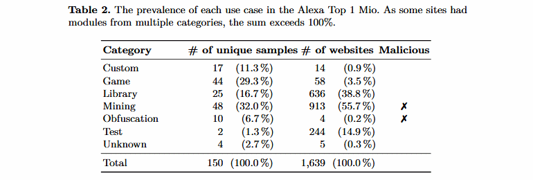

Yazılım Gündemi - 2020/02
6-12 Ocak 2020
İçindekiler
< Önceki Gündem | 6-12 Ocak 2020 | Sonraki Gündem >
1 13 Ocak'tan itibaren Java kodları derlemede sorun yaşayabilirsiniz
Daha önce de sıkça bahsettiğim gibi günümüzün yazılım geliştirme süreçlerinde üçüncü parti kütüphaneler ve araçlar artık neredeyse olmazsa olmazlardan biri. Kendimiz yapsak farklı sorunlarla karşılaşacağımız ya da vaktimizi alacak birçok ihtiyacımızı bu üçüncü parti kütüphaneler ve araçlarla gideriyoruz fakat beraberinde getirdiği riskler de yok değil. İşte bu risklerden biri olan MITM(Man-in-the-middle) saldırılarını önlemek için Java ekosistemindeki üçüncü parti kütüphane depoları (artifact repository) sadece HTTPS bağlantılarına izin verecekler. Tabii ki bu kararı yeni almadılar, önceden duyurmuşlardı fakat yine de hatırlatmak için gündeme almak istedim. Popüler bazı depoların HTTP desteklerini sonlandıracakları tarihler bu şekilde:
- JCenter(JFrog Bintray) | http://jcenter.bintray.com : 13 Ocak 2020. Duyuru yazısı
- Maven Central | http://repo1.maven.org, http://repo.maven.apache.org: 15 Ocak 2020. Duyuru yazısı
- Spring (Pivotal) | http://repo.spring.io: 15 Ocak 2020. Duyuru yazısı
- Gradle | http://repo.gradle.org: 15 Ocak 2020. Duyuru yazısı
Bu değişiklikten etkilenmemek için ilgili depoların yayınladıkları duyuru yazılarındaki yönergeleri uygulamalısınız.
Elbette üçüncü parti kütüphaneler ile ilgili tek sorun MITM saldırıları değil. Projeye eklediğimiz kütüphaneyle birlikte o kütüphanenin varsa güvenlik açıklarını da projeye ekliyoruz. İlk yazılım gündemi yazısından beri sürekli çeşitli kütüphanelerdeki açıkların etkileriyle ilgili konuları işliyorum. Hacker'lar artık son kullanıcı yerine direkt bizim kodlarımızı kullanarak içeriye girmeye çalışıyorlar, bu alanı keşfettiler. Dolayısıyla projemize bağımlılık olarak bir kütüphane eklerken, körü körüne eklemek yerine en azından kodlarına şöyle bir göz gezdirmekte fayda var.
2 TypeScript 3.8 Beta duyuruldu
Microsoft tarafından geliştirilen ve gittikçe popülaritesi artan dillerden TypeScript, 3.8 Beta sürümünü bu hafta içerisinde yayınladı. Bu sürüm ile birlikte gelen bir özelliği inceleyelim:
2.1 Private Fields
ECMAScript'de stage-3 aşamasına geçen class fields özelliğinin bir parçası aslında bu özellik. Diğer dillerde görmeye alışık olduğumuz class'a ait bir özelliğin dışarıdan erişilemez olmasını sağlıyor. Örneğin:
class Kisi { #isim: string constructor(isim: string) { this.#isim = isim; } selamla() { console.log("Selam, benim adım ${this.#isim}!"); } } let eren = new Kisi("Eren Hatırnaz"); eren.#isim
Artık böyle bir kod yazmak mümkün olacak ve son satırdaki gibi sınıfın dışından bir erişim yapılmaya çalışılırsa şu hata alınacak:
Property '#isim' is not accessible outside class 'Kisi' because it has a private identifier.
Fakat bu özelliği kullanmak için şunları unutmamalıyız:
- Private field'lar
#karakteri ile başlamalıdır ve sınıf içerisinde aynı şekilde çağırılmalıdır. - Her private field sadece kendi sınıfı içerisinde private durumundadır.
- TypeScript'deki diğer
publicveprivategibi anahtar kelimeler bu özellikle birlikte kullanılamaz.
Bazı maddeler tam anlaşılmamış olabilir fakat örneklerle birlikte açıklamak yazıyı biraz uzatacağı için bu özellikle ilgili arkadaşları konu bağlığına eklediğim bağlantıya tıklayamaya davet ediyorum.
3 WebAssembly kullanan sitelerin birçoğu kötü amaçlı kullanıyor
Geçtiğimiz haftalarda W3C tarafından bir web standardı olarak kabul edilen WebAssembly programlama dili performanslı olmasıyla öne çıktığı için kötü amaçlı kişilerin de gözünden kaçamamış maalesef. Geçtiğimiz sene yayınlanan bir akademik çalışma ortaya koydu ki Alexa'nın popüler ilk 1 milyon web sitesi içerisindeki sitelerden WebAssembly kullananların birçoğu bunu kötü amaçlarına alet ediyorlarmış.

Araştırmacılar Alexa'nın ilk 1 milyon web sitesinden rastgele seçilmiş 3 sayfayı seçeyerek bu sayfada WebAssembly kodu olup olmadığını analiz etmişler ve toplam 1.639 web sitesinin WebAssembly kodu içerdiğini tespit etmişler. Bunlardan bazıları diğer birçok site tarafından kullanılan kütüphaneler fakat araştırmacılar diğer yaygın olmayan kodları incelediğinde bazılarının kripto para madenciliği amacıyla yazıldığını fark etmişler. Dil hem performanslı hem de tarayıcıda çalışınca işte fırsatı kaçırmamışlar.
Bazı web sayfalarının ise obfuscate yöntemleri kullanarak WebAssembly kodlarının içeriğini gizlediğini fark etmişler. Araştırmacılar bu kategori için de "malicious" diye tanımlamışlar ama ben tam öyle düşünmüyorum. Her ne kadar kodlarını saklamalarında biraz şüphe olsa da insanlar kodlarını saklamayı seçebilirler, bu illaki kötü amaçlı olacaklarını göstermez.
İşte siber güvenlik alanında çalışacaklar için yeni bir alt alan daha. Web standardı olarak kabul edilmesiyle birlikte bu tarz amaçlar için kullanan kişilerin de artacağını düşünüyorum. Siber güvenlik alanıyla ilgili arkadaşların araştırmalarını tavsiye ederim.
4 Yaklaşan Etkinlikler
| Etkinlik İsmi | Yeri | Tarihi |
|---|---|---|
| Bulutun Geleceği, Hibrit Bulut {Webcast} | Online | 14 Ocak 10:00 |
| NS Ankara Ocak Ayı 1.Buluşması | Ankara | 14 Ocak 19:00 |
| TRAI Meet-up 30 - Biyometrik Güvenlik ve Yapay Zeka | İstanbul | 15 Ocak 18:00 |
| DevC İstanbul Semi Ideathon | İstanbul | 18 Ocak 07:00 |
| Women Techmakers Series | Ankara | 18 Ocak 11:00 |
| Mobile Game Meetup | İstanbul | 18 Ocak 13:00 |
| Game Meetup'1 | İstanbul | 20 Ocak 11:00 |
| F2P Mobil Oyunlar için Metrikler ve Analiz Rehberi | Ankara | 21 Ocak 19:00 |
| Test Driven Development ve Clean Architecture | İzmir | 21 Ocak 19:00 |
| PostgreSQL Konuşmaları: Pgbadger ile Log Analizi ve Performans İzleme | Ankara | 21 Ocak 19:00 |
| Infrastructure as Software | İstanbul | 23 Ocak 18:30 |
| Promethues ve Grafana ile Metrik Oluşturma ve Görüntüleme | İstanbul | 24 Ocak 19:00 |
5 Diğer Haberler
- D programlama dilinin 2.090.0 sürümü duyuruldu.
- Kubernetes için yeni bir araç tanıtıltı: Grafana Tanka.
- Idris programlama dilinin geliştiricisi Idris 2 üzerinde çalışıyormuş.
- Testlerde kullanmak için sahte API'ler oluşturmaya yarayan yeni bir araç tanıtıldı: Mocking Hans.
- Python için HTTP istemcisi olan HTTPX kütüphanesinin 0.11.0 sürümü yayınlandı.
- DuckScript dilinin 0.1.5 sürümü yayınlandı.
- TBTK kütüphanesinin v2.0.0 sürümü yayınlandı.
- CXX kütüphanesinin ilk versiyonu 0.1.0 yayınlandı.
- Terminal ekranında grafiksel kullanıcı arayüzleri oluşturmaya yarayan C# kütüphanesi Konsole'nin 5.4.2 sürümü duyuruldu.
6 Lisans

Yazılım Gündemi - 2020/02 yazısı Eren Hatırnaz tarafından Creative Commons Atıf-GayriTicari-AynıLisanslaPaylaş 4.0 Uluslararası Lisansı (CC BY-NC-SA 4.0) ile lisanslanmıştır.